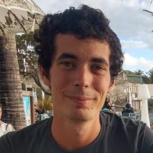

Cervin Guyomar Homepage
About me

I am a reasearch engineer in INRAE GenPhySE in Toulouse, France. I’m a member of the DynaGen group and the Sigenae platform.
I am a bioinformatician, with a focus on sequencing data analysis for functional genomics
Topics
Here is a summary of my past and current projects :
Functional annotation of animal genomes
I’m invovled in two europeans projects aiming at improving genomic annotations of farmed species. I am a contributor of the WP2 of GENE-SWitCH, where we analyze multi-omics (RNA-seq, smRNA-seq, ChIP-seq, ATAC-seq, Hi-C) data of two monogastric species during development to improve functional annotations of their genomes and characterize the regulation landscape during development.
I am also more lightly involved in AQUA-FAANG, for the annotation of miRNAs in 6 fish species.
Genotyping using low coverage sequencing data
I’m exploring the capacities of sparse or low coverage sequencing for cost efficient genome-wide genotyping. I have started to developp PARSEC a Nextflow pipeline for variant calling and imputation using such data
Bioinformatics analyses
As a Sigenae engineer, I bring support to biologists to process genomic data, in particular RNA-seq and smRNA-seq data.
Past projects :
- Annotation and analysis of circulating miRNAs of the rainbow trout for biomarker selection
- PhD project :
- Targetted genome assembly in metagenomic data (MinYS)
- Strain level characterization of microbial species in the pea aphid holobiont